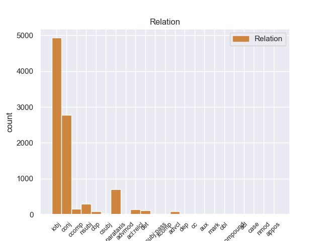
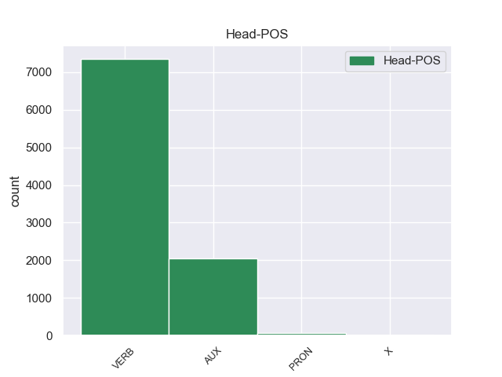
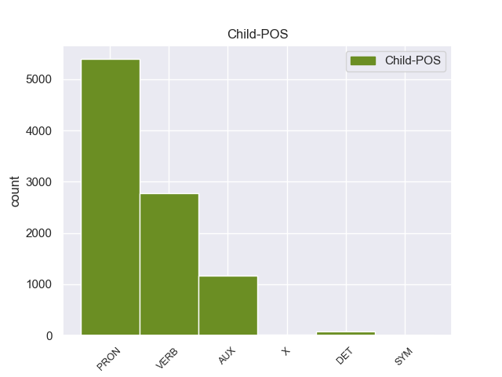

Distribution of features within this leaf



Agreement Rules sorted by frequency.
- When the dependent token is the indirect object(iobj) of the head token,
1 En _ _ _ _ 0 _ _ _
2 1991 _ _ _ _ 0 _ _ _
3 , _ _ _ _ 0 _ _ _
4 como _ _ _ _ 0 _ _ _
5 ya _ _ _ _ 0 _ _ _
6 está _ _ _ _ 0 _ _ _
7 indicado _ _ _ _ 0 _ _ _
8 en _ _ _ _ 0 _ _ _
9 el _ _ _ _ 0 _ _ _
10 párrafo _ _ _ _ 0 _ _ _
11 anterior _ _ _ _ 0 _ _ _
12 , _ _ _ _ 0 _ _ _
13 se _ _ _ _ 0 _ _ _
14 creó _ _ _ _ 0 _ _ _
15 un _ _ _ _ 0 _ _ _
16 equipo _ _ _ _ 0 _ _ _
17 ad _ _ _ _ 0 _ _ _
18 hoc _ _ _ _ 0 _ _ _
19 para _ _ _ _ 0 _ _ _
20 averiguar _ _ _ _ 0 _ _ _
21 como _ _ _ _ 0 _ _ _
22 se él PRON _ Case=Acc,Dat|Person=3|PrepCase=Npr|PronType=Prs|Reflex=Yes 23 iobj _ _
23 podía poder AUX _ Mood=Ind|Number=Sing|Person=3|Tense=Imp|VerbForm=Fin 0 _ _ _
24 desarrollar _ _ _ _ 0 _ _ _
25 el _ _ _ _ 0 _ _ _
26 Dialogo _ _ _ _ 0 _ _ _
27 Social _ _ _ _ 0 _ _ _
28 , _ _ _ _ 0 _ _ _
29 este _ _ _ _ 0 _ _ _
30 equipo _ _ _ _ 0 _ _ _
31 estaba _ _ _ _ 0 _ _ _
32 formado _ _ _ _ 0 _ _ _
33 por _ _ _ _ 0 _ _ _
34 representantes _ _ _ _ 0 _ _ _
35 de _ _ _ _ 0 _ _ _
36 todas _ _ _ _ 0 _ _ _
37 las _ _ _ _ 0 _ _ _
38 organizaciones _ _ _ _ 0 _ _ _
39 relacionadas _ _ _ _ 0 _ _ _
40 con _ _ _ _ 0 _ _ _
41 CES _ _ _ _ 0 _ _ _
42 , _ _ _ _ 0 _ _ _
43 UNICE _ _ _ _ 0 _ _ _
44 y _ _ _ _ 0 _ _ _
45 CEEP _ _ _ _ 0 _ _ _
46 ; _ _ _ _ 0 _ _ _
1 Jazmin _ _ _ _ 0 _ _ _
2 es ser AUX _ Mood=Ind|Number=Sing|Person=3|Tense=Pres|VerbForm=Fin 0 _ _ _
3 todo _ _ _ _ 0 _ _ _
4 lo _ _ _ _ 0 _ _ _
5 contrario _ _ _ _ 0 _ _ _
6 , _ _ _ _ 0 _ _ _
7 es _ _ _ _ 0 _ _ _
8 tímida _ _ _ _ 0 _ _ _
9 y _ _ _ _ 0 _ _ _
10 callada _ _ _ _ 0 _ _ _
11 , _ _ _ _ 0 _ _ _
12 pero _ _ _ _ 0 _ _ _
13 siempre _ _ _ _ 0 _ _ _
14 es ser AUX _ Mood=Ind|Number=Sing|Person=3|Tense=Pres|VerbForm=Fin 2 conj _ _
15 arrastrada _ _ _ _ 0 _ _ _
16 por _ _ _ _ 0 _ _ _
17 las _ _ _ _ 0 _ _ _
18 locuras _ _ _ _ 0 _ _ _
19 y _ _ _ _ 0 _ _ _
20 travesuras _ _ _ _ 0 _ _ _
21 que _ _ _ _ 0 _ _ _
22 inventa _ _ _ _ 0 _ _ _
23 Alma _ _ _ _ 0 _ _ _
24 . _ _ _ _ 0 _ _ _
1 En _ _ _ _ 0 _ _ _
2 1991 _ _ _ _ 0 _ _ _
3 , _ _ _ _ 0 _ _ _
4 como _ _ _ _ 0 _ _ _
5 ya _ _ _ _ 0 _ _ _
6 está _ _ _ _ 0 _ _ _
7 indicado _ _ _ _ 0 _ _ _
8 en _ _ _ _ 0 _ _ _
9 el _ _ _ _ 0 _ _ _
10 párrafo _ _ _ _ 0 _ _ _
11 anterior _ _ _ _ 0 _ _ _
12 , _ _ _ _ 0 _ _ _
13 se _ _ _ _ 0 _ _ _
14 creó crear VERB _ Mood=Ind|Number=Sing|Person=3|Tense=Past|VerbForm=Fin 0 _ _ _
15 un _ _ _ _ 0 _ _ _
16 equipo _ _ _ _ 0 _ _ _
17 ad _ _ _ _ 0 _ _ _
18 hoc _ _ _ _ 0 _ _ _
19 para _ _ _ _ 0 _ _ _
20 averiguar _ _ _ _ 0 _ _ _
21 como _ _ _ _ 0 _ _ _
22 se _ _ _ _ 0 _ _ _
23 podía _ _ _ _ 0 _ _ _
24 desarrollar _ _ _ _ 0 _ _ _
25 el _ _ _ _ 0 _ _ _
26 Dialogo _ _ _ _ 0 _ _ _
27 Social _ _ _ _ 0 _ _ _
28 , _ _ _ _ 0 _ _ _
29 este _ _ _ _ 0 _ _ _
30 equipo _ _ _ _ 0 _ _ _
31 estaba estar AUX _ Mood=Ind|Number=Sing|Person=3|Tense=Imp|VerbForm=Fin 14 parataxis _ _
32 formado _ _ _ _ 0 _ _ _
33 por _ _ _ _ 0 _ _ _
34 representantes _ _ _ _ 0 _ _ _
35 de _ _ _ _ 0 _ _ _
36 todas _ _ _ _ 0 _ _ _
37 las _ _ _ _ 0 _ _ _
38 organizaciones _ _ _ _ 0 _ _ _
39 relacionadas _ _ _ _ 0 _ _ _
40 con _ _ _ _ 0 _ _ _
41 CES _ _ _ _ 0 _ _ _
42 , _ _ _ _ 0 _ _ _
43 UNICE _ _ _ _ 0 _ _ _
44 y _ _ _ _ 0 _ _ _
45 CEEP _ _ _ _ 0 _ _ _
46 ; _ _ _ _ 0 _ _ _
1 Les _ _ _ _ 0 _ _ _
2 he _ _ _ _ 0 _ _ _
3 pedido _ _ _ _ 0 _ _ _
4 donde _ _ _ _ 0 _ _ _
5 podía _ _ _ _ 0 _ _ _
6 encontrar _ _ _ _ 0 _ _ _
7 un _ _ _ _ 0 _ _ _
8 fabricante _ _ _ _ 0 _ _ _
9 de _ _ _ _ 0 _ _ _
10 trofeos _ _ _ _ 0 _ _ _
11 en _ _ _ _ 0 _ _ _
12 metacrilato _ _ _ _ 0 _ _ _
13 , _ _ _ _ 0 _ _ _
14 y _ _ _ _ 0 _ _ _
15 ellos él PRON _ Case=Acc,Nom|Gender=Masc|Number=Plur|Person=3|PronType=Prs 19 nsubj _ _
16 mismos _ _ _ _ 0 _ _ _
17 me _ _ _ _ 0 _ _ _
18 los _ _ _ _ 0 _ _ _
19 han haber AUX _ Mood=Ind|Number=Plur|Person=3|Tense=Pres|VerbForm=Fin 0 _ _ _
20 fabricado _ _ _ _ 0 _ _ _
21 a _ _ _ _ 0 _ _ _
22 un _ _ _ _ 0 _ _ _
23 precio _ _ _ _ 0 _ _ _
24 muy _ _ _ _ 0 _ _ _
25 interesante _ _ _ _ 0 _ _ _
26 . _ _ _ _ 0 _ _ _
1 Los _ _ _ _ 0 _ _ _
2 representantes _ _ _ _ 0 _ _ _
3 de _ _ _ _ 0 _ _ _
4 TAV _ _ _ _ 0 _ _ _
5 , _ _ _ _ 0 _ _ _
6 que _ _ _ _ 0 _ _ _
7 habían _ _ _ _ 0 _ _ _
8 acordado _ _ _ _ 0 _ _ _
9 esperar _ _ _ _ 0 _ _ _
10 dos _ _ _ _ 0 _ _ _
11 semanas _ _ _ _ 0 _ _ _
12 para _ _ _ _ 0 _ _ _
13 llegar _ _ _ _ 0 _ _ _
14 a _ _ _ _ 0 _ _ _
15 un _ _ _ _ 0 _ _ _
16 acuerdo _ _ _ _ 0 _ _ _
17 sobre _ _ _ _ 0 _ _ _
18 la _ _ _ _ 0 _ _ _
19 disputa _ _ _ _ 0 _ _ _
20 , _ _ _ _ 0 _ _ _
21 declararon _ _ _ _ 0 _ _ _
22 que _ _ _ _ 0 _ _ _
23 por _ _ _ _ 0 _ _ _
24 lo él PRON _ Case=Acc|Gender=Masc|Number=Sing|Person=3|PrepCase=Npr|PronType=Prs 0 _ _ _
25 que _ _ _ _ 0 _ _ _
26 ellos _ _ _ _ 0 _ _ _
27 sabían saber VERB _ Mood=Ind|Number=Plur|Person=3|Tense=Imp|VerbForm=Fin 24 acl:relcl _ SpaceAfter=No
28 , _ _ _ _ 0 _ _ _
29 el _ _ _ _ 0 _ _ _
30 acuerdo _ _ _ _ 0 _ _ _
31 que _ _ _ _ 0 _ _ _
32 habían _ _ _ _ 0 _ _ _
33 firmado _ _ _ _ 0 _ _ _
34 con _ _ _ _ 0 _ _ _
35 el _ _ _ _ 0 _ _ _
36 gobierno _ _ _ _ 0 _ _ _
37 de _ _ _ _ 0 _ _ _
38 Irán _ _ _ _ 0 _ _ _
39 el _ _ _ _ 0 _ _ _
40 año _ _ _ _ 0 _ _ _
41 anterior _ _ _ _ 0 _ _ _
42 para _ _ _ _ 0 _ _ _
43 operar _ _ _ _ 0 _ _ _
44 la _ _ _ _ 0 _ _ _
45 Terminal _ _ _ _ 0 _ _ _
46 1 _ _ _ _ 0 _ _ _
47 de _ _ _ _ 0 _ _ _
48 el _ _ _ _ 0 _ _ _
49 aeropuerto _ _ _ _ 0 _ _ _
50 aún _ _ _ _ 0 _ _ _
51 seguía _ _ _ _ 0 _ _ _
52 en _ _ _ _ 0 _ _ _
53 vigor _ _ _ _ 0 _ _ _
54 . _ _ _ _ 0 _ _ _
1 " _ _ _ _ 0 _ _ _
2 Ésta _ _ _ _ 0 _ _ _
3 área _ _ _ _ 0 _ _ _
4 era ser AUX _ Mood=Ind|Number=Sing|Person=3|Tense=Imp|VerbForm=Fin 43 ccomp _ _
5 un _ _ _ _ 0 _ _ _
6 área _ _ _ _ 0 _ _ _
7 de _ _ _ _ 0 _ _ _
8 conservación _ _ _ _ 0 _ _ _
9 que _ _ _ _ 0 _ _ _
10 estaba _ _ _ _ 0 _ _ _
11 bajo _ _ _ _ 0 _ _ _
12 cuidado _ _ _ _ 0 _ _ _
13 de _ _ _ _ 0 _ _ _
14 la _ _ _ _ 0 _ _ _
15 Universidad _ _ _ _ 0 _ _ _
16 Autónoma _ _ _ _ 0 _ _ _
17 de _ _ _ _ 0 _ _ _
18 Campeche _ _ _ _ 0 _ _ _
19 , _ _ _ _ 0 _ _ _
20 pero _ _ _ _ 0 _ _ _
21 pasa _ _ _ _ 0 _ _ _
22 ahora _ _ _ _ 0 _ _ _
23 a _ _ _ _ 0 _ _ _
24 el _ _ _ _ 0 _ _ _
25 cuidado _ _ _ _ 0 _ _ _
26 de _ _ _ _ 0 _ _ _
27 los _ _ _ _ 0 _ _ _
28 ejidatarios _ _ _ _ 0 _ _ _
29 y _ _ _ _ 0 _ _ _
30 forma _ _ _ _ 0 _ _ _
31 parte _ _ _ _ 0 _ _ _
32 de _ _ _ _ 0 _ _ _
33 la _ _ _ _ 0 _ _ _
34 reserva _ _ _ _ 0 _ _ _
35 de _ _ _ _ 0 _ _ _
36 la _ _ _ _ 0 _ _ _
37 biosfera _ _ _ _ 0 _ _ _
38 de _ _ _ _ 0 _ _ _
39 los _ _ _ _ 0 _ _ _
40 petenes _ _ _ _ 0 _ _ _
41 " _ _ _ _ 0 _ _ _
42 , _ _ _ _ 0 _ _ _
43 dijo decir VERB _ Mood=Ind|Number=Sing|Person=3|Tense=Past|VerbForm=Fin 0 _ _ _
44 Irazú _ _ _ _ 0 _ _ _
45 Acevedo _ _ _ _ 0 _ _ _
46 , _ _ _ _ 0 _ _ _
47 guía _ _ _ _ 0 _ _ _
48 de _ _ _ _ 0 _ _ _
49 turistas _ _ _ _ 0 _ _ _
50 . _ _ _ _ 0 _ _ _
1 Jazmin _ _ _ _ 0 _ _ _
2 es ser AUX _ Mood=Ind|Number=Sing|Person=3|Tense=Pres|VerbForm=Fin 0 _ _ _
3 todo _ _ _ _ 0 _ _ _
4 lo él PRON _ Case=Acc|Gender=Masc|Number=Sing|Person=3|PrepCase=Npr|PronType=Prs 2 det _ _
5 contrario _ _ _ _ 0 _ _ _
6 , _ _ _ _ 0 _ _ _
7 es _ _ _ _ 0 _ _ _
8 tímida _ _ _ _ 0 _ _ _
9 y _ _ _ _ 0 _ _ _
10 callada _ _ _ _ 0 _ _ _
11 , _ _ _ _ 0 _ _ _
12 pero _ _ _ _ 0 _ _ _
13 siempre _ _ _ _ 0 _ _ _
14 es _ _ _ _ 0 _ _ _
15 arrastrada _ _ _ _ 0 _ _ _
16 por _ _ _ _ 0 _ _ _
17 las _ _ _ _ 0 _ _ _
18 locuras _ _ _ _ 0 _ _ _
19 y _ _ _ _ 0 _ _ _
20 travesuras _ _ _ _ 0 _ _ _
21 que _ _ _ _ 0 _ _ _
22 inventa _ _ _ _ 0 _ _ _
23 Alma _ _ _ _ 0 _ _ _
24 . _ _ _ _ 0 _ _ _
1 Una _ _ _ _ 0 _ _ _
2 posibilidad _ _ _ _ 0 _ _ _
3 que _ _ _ _ 0 _ _ _
4 tiene _ _ _ _ 0 _ _ _
5 esta _ _ _ _ 0 _ _ _
6 habitación _ _ _ _ 0 _ _ _
7 gracias _ _ _ _ 0 _ _ _
8 a _ _ _ _ 0 _ _ _
9 que _ _ _ _ 0 _ _ _
10 es _ _ _ _ 0 _ _ _
11 menos _ _ _ _ 0 _ _ _
12 ruidosa _ _ _ _ 0 _ _ _
13 por _ _ _ _ 0 _ _ _
14 encontrar _ _ _ _ 0 _ _ _
15 se _ _ _ _ 0 _ _ _
16 alejada _ _ _ _ 0 _ _ _
17 de _ _ _ _ 0 _ _ _
18 el _ _ _ _ 0 _ _ _
19 resto _ _ _ _ 0 _ _ _
20 de _ _ _ _ 0 _ _ _
21 cuartos _ _ _ _ 0 _ _ _
22 , _ _ _ _ 0 _ _ _
23 es ser AUX _ Mood=Ind|Number=Sing|Person=3|Tense=Pres|VerbForm=Fin 0 _ _ _
24 la él PRON _ Case=Acc|Gender=Fem|Number=Sing|Person=3|PrepCase=Npr|PronType=Prs 23 cop _ _
25 de _ _ _ _ 0 _ _ _
26 convertir _ _ _ _ 0 _ _ _
27 la _ _ _ _ 0 _ _ _
28 en _ _ _ _ 0 _ _ _
29 un _ _ _ _ 0 _ _ _
30 estudio _ _ _ _ 0 _ _ _
31 . _ _ _ _ 0 _ _ _
1 Haya _ _ _ _ 0 _ _ _
2 es _ _ _ _ 0 _ _ _
3 un _ _ _ _ 0 _ _ _
4 género _ _ _ _ 0 _ _ _
5 de _ _ _ _ 0 _ _ _
6 dinosaurio _ _ _ _ 0 _ _ _
7 ornitisquio _ _ _ _ 0 _ _ _
8 ornitópodo _ _ _ _ 0 _ _ _
9 basal _ _ _ _ 0 _ _ _
10 que _ _ _ _ 0 _ _ _
11 vivió vivir VERB _ Mood=Ind|Number=Sing|Person=3|Tense=Past|VerbForm=Fin 0 _ _ _
12 a _ _ _ _ 0 _ _ _
13 finales _ _ _ _ 0 _ _ _
14 de _ _ _ _ 0 _ _ _
15 el _ _ _ _ 0 _ _ _
16 período _ _ _ _ 0 _ _ _
17 Cretácico _ _ _ _ 0 _ _ _
18 , _ _ _ _ 0 _ _ _
19 hace hacer VERB _ Mood=Ind|Number=Sing|Person=3|Tense=Pres|VerbForm=Fin 11 advcl _ _
20 aproximadamente _ _ _ _ 0 _ _ _
21 84 _ _ _ _ 0 _ _ _
22 millones _ _ _ _ 0 _ _ _
23 de _ _ _ _ 0 _ _ _
24 años _ _ _ _ 0 _ _ _
25 durante _ _ _ _ 0 _ _ _
26 el _ _ _ _ 0 _ _ _
27 Santoniano _ _ _ _ 0 _ _ _
28 , _ _ _ _ 0 _ _ _
29 en _ _ _ _ 0 _ _ _
30 lo _ _ _ _ 0 _ _ _
31 que _ _ _ _ 0 _ _ _
32 hoy _ _ _ _ 0 _ _ _
33 Asia _ _ _ _ 0 _ _ _
34 . _ _ _ _ 0 _ _ _
1 Así _ _ _ _ 0 _ _ _
2 , _ _ _ _ 0 _ _ _
3 entiende _ _ _ _ 0 _ _ _
4 que _ _ _ _ 0 _ _ _
5 el _ _ _ _ 0 _ _ _
6 que _ _ _ _ 0 _ _ _
7 alguien _ _ _ _ 0 _ _ _
8 haga hacer VERB _ Mood=Sub|Number=Sing|Person=3|Tense=Pres|VerbForm=Fin 21 csubj _ _
9 un _ _ _ _ 0 _ _ _
10 resultado _ _ _ _ 0 _ _ _
11 extraordinario _ _ _ _ 0 _ _ _
12 -- _ _ _ _ 0 _ _ _
13 como _ _ _ _ 0 _ _ _
14 ganar _ _ _ _ 0 _ _ _
15 ocho _ _ _ _ 0 _ _ _
16 partidas _ _ _ _ 0 _ _ _
17 de _ _ _ _ 0 _ _ _
18 nueve _ _ _ _ 0 _ _ _
19 jugadas _ _ _ _ 0 _ _ _
20 -- _ _ _ _ 0 _ _ _
21 es ser AUX _ Mood=Ind|Number=Sing|Person=3|Tense=Pres|VerbForm=Fin 0 _ _ _
22 mucho _ _ _ _ 0 _ _ _
23 más _ _ _ _ 0 _ _ _
24 improbable _ _ _ _ 0 _ _ _
25 que _ _ _ _ 0 _ _ _
26 ganar _ _ _ _ 0 _ _ _
27 seis _ _ _ _ 0 _ _ _
28 partidas _ _ _ _ 0 _ _ _
29 de _ _ _ _ 0 _ _ _
30 nueve _ _ _ _ 0 _ _ _
31 , _ _ _ _ 0 _ _ _
32 aún _ _ _ _ 0 _ _ _
33 cuando _ _ _ _ 0 _ _ _
34 en _ _ _ _ 0 _ _ _
35 el _ _ _ _ 0 _ _ _
36 primer _ _ _ _ 0 _ _ _
37 caso _ _ _ _ 0 _ _ _
38 los _ _ _ _ 0 _ _ _
39 jugadores _ _ _ _ 0 _ _ _
40 fueran _ _ _ _ 0 _ _ _
41 más _ _ _ _ 0 _ _ _
42 débiles _ _ _ _ 0 _ _ _
43 . _ _ _ _ 0 _ _ _
1 El _ _ _ _ 0 _ _ _
2 entrenador _ _ _ _ 0 _ _ _
3 serbio _ _ _ _ 0 _ _ _
4 confía _ _ _ _ 0 _ _ _
5 en _ _ _ _ 0 _ _ _
6 el _ _ _ _ 0 _ _ _
7 jerezano _ _ _ _ 0 _ _ _
8 , _ _ _ _ 0 _ _ _
9 que _ _ _ _ 0 _ _ _
10 se _ _ _ _ 0 _ _ _
11 convierte _ _ _ _ 0 _ _ _
12 en _ _ _ _ 0 _ _ _
13 parte _ _ _ _ 0 _ _ _
14 fundamental _ _ _ _ 0 _ _ _
15 de _ _ _ _ 0 _ _ _
16 el _ _ _ _ 0 _ _ _
17 equipo _ _ _ _ 0 _ _ _
18 que _ _ _ _ 0 _ _ _
19 consigue _ _ _ _ 0 _ _ _
20 " _ _ _ _ 0 _ _ _
21 El _ _ _ _ 0 _ _ _
22 Doblete _ _ _ _ 0 _ _ _
23 " _ _ _ _ 0 _ _ _
24 , _ _ _ _ 0 _ _ _
25 es ser VERB _ Mood=Ind|Number=Sing|Person=3|Tense=Pres|VerbForm=Fin 29 cc _ _
26 decir _ _ _ _ 0 _ _ _
27 , _ _ _ _ 0 _ _ _
28 que _ _ _ _ 0 _ _ _
29 gana ganar VERB _ Mood=Ind|Number=Sing|Person=3|Tense=Pres|VerbForm=Fin 0 _ _ _
30 la _ _ _ _ 0 _ _ _
31 Liga _ _ _ _ 0 _ _ _
32 y _ _ _ _ 0 _ _ _
33 la _ _ _ _ 0 _ _ _
34 Copa _ _ _ _ 0 _ _ _
35 de _ _ _ _ 0 _ _ _
36 el _ _ _ _ 0 _ _ _
37 Rey _ _ _ _ 0 _ _ _
38 de _ _ _ _ 0 _ _ _
39 Fútbol _ _ _ _ 0 _ _ _
40 en _ _ _ _ 0 _ _ _
41 esa _ _ _ _ 0 _ _ _
42 misma _ _ _ _ 0 _ _ _
43 campaña _ _ _ _ 0 _ _ _
44 . _ _ _ _ 0 _ _ _
1 Anderton _ _ _ _ 0 _ _ _
2 entonces _ _ _ _ 0 _ _ _
3 revela _ _ _ _ 0 _ _ _
4 que _ _ _ _ 0 _ _ _
5 ella él PRON _ Case=Acc,Nom|Gender=Fem|Number=Sing|Person=3|PronType=Prs 6 nsubj:pass _ _
6 fue ser AUX _ Mood=Ind|Number=Sing|Person=3|Tense=Past|VerbForm=Fin 0 _ _ _
7 asesinada _ _ _ _ 0 _ _ _
8 ya _ _ _ _ 0 _ _ _
9 que _ _ _ _ 0 _ _ _
10 quería _ _ _ _ 0 _ _ _
11 que _ _ _ _ 0 _ _ _
12 le _ _ _ _ 0 _ _ _
13 regresaran _ _ _ _ 0 _ _ _
14 a _ _ _ _ 0 _ _ _
15 Agatha _ _ _ _ 0 _ _ _
16 , _ _ _ _ 0 _ _ _
17 esto _ _ _ _ 0 _ _ _
18 haría _ _ _ _ 0 _ _ _
19 que _ _ _ _ 0 _ _ _
20 el _ _ _ _ 0 _ _ _
21 sistema _ _ _ _ 0 _ _ _
22 fuera _ _ _ _ 0 _ _ _
23 inútil _ _ _ _ 0 _ _ _
24 y _ _ _ _ 0 _ _ _
25 PreCrimen _ _ _ _ 0 _ _ _
26 sería _ _ _ _ 0 _ _ _
27 descontinuado _ _ _ _ 0 _ _ _
28 . _ _ _ _ 0 _ _ _
1 En _ _ _ _ 0 _ _ _
2 el _ _ _ _ 0 _ _ _
3 preacuerdo _ _ _ _ 0 _ _ _
4 firmado _ _ _ _ 0 _ _ _
5 por _ _ _ _ 0 _ _ _
6 ambas _ _ _ _ 0 _ _ _
7 formaciones _ _ _ _ 0 _ _ _
8 se _ _ _ _ 0 _ _ _
9 acordó acordar VERB _ Mood=Ind|Number=Sing|Person=3|Tense=Past|VerbForm=Fin 13 mark _ _
10 que _ _ _ _ 0 _ _ _
11 ambas _ _ _ _ 0 _ _ _
12 " _ _ _ _ 0 _ _ _
13 codecidirían codecidir VERB _ Mood=Cnd|Number=Plur|Person=3|VerbForm=Fin 0 _ _ _
14 y _ _ _ _ 0 _ _ _
15 compartirían _ _ _ _ 0 _ _ _
16 " _ _ _ _ 0 _ _ _
17 el _ _ _ _ 0 _ _ _
18 mismo _ _ _ _ 0 _ _ _
19 grupo _ _ _ _ 0 _ _ _
20 parlamentario _ _ _ _ 0 _ _ _
21 . _ _ _ _ 0 _ _ _
1 Sam _ _ _ _ 0 _ _ _
2 les _ _ _ _ 0 _ _ _
3 dice _ _ _ _ 0 _ _ _
4 , _ _ _ _ 0 _ _ _
5 de _ _ _ _ 0 _ _ _
6 broma _ _ _ _ 0 _ _ _
7 , _ _ _ _ 0 _ _ _
8 que _ _ _ _ 0 _ _ _
9 Carly _ _ _ _ 0 _ _ _
10 y _ _ _ _ 0 _ _ _
11 Freddie _ _ _ _ 0 _ _ _
12 se _ _ _ _ 0 _ _ _
13 aman _ _ _ _ 0 _ _ _
14 , _ _ _ _ 0 _ _ _
15 provocando _ _ _ _ 0 _ _ _
16 que _ _ _ _ 0 _ _ _
17 los _ _ _ _ 0 _ _ _
18 fans _ _ _ _ 0 _ _ _
19 de _ _ _ _ 0 _ _ _
20 iCarly _ _ _ _ 0 _ _ _
21 inicien _ _ _ _ 0 _ _ _
22 una _ _ _ _ 0 _ _ _
23 descontrolada _ _ _ _ 0 _ _ _
24 guerra _ _ _ _ 0 _ _ _
25 de _ _ _ _ 0 _ _ _
26 fans _ _ _ _ 0 _ _ _
27 donde _ _ _ _ 0 _ _ _
28 discuten discutar VERB _ Mood=Ind|Number=Plur|Person=3|Tense=Pres|VerbForm=Fin 0 _ _ _
29 qué _ _ _ _ 0 _ _ _
30 relación _ _ _ _ 0 _ _ _
31 amorosa _ _ _ _ 0 _ _ _
32 existe existir VERB _ Mood=Ind|Number=Sing|Person=3|Tense=Pres|VerbForm=Fin 28 xcomp _ _
33 entre _ _ _ _ 0 _ _ _
34 los _ _ _ _ 0 _ _ _
35 chicos _ _ _ _ 0 _ _ _
36 : _ _ _ _ 0 _ _ _
37 si _ _ _ _ 0 _ _ _
38 Carly _ _ _ _ 0 _ _ _
39 y _ _ _ _ 0 _ _ _
40 Freddie _ _ _ _ 0 _ _ _
41 ( _ _ _ _ 0 _ _ _
42 Creddie _ _ _ _ 0 _ _ _
43 ) _ _ _ _ 0 _ _ _
44 o _ _ _ _ 0 _ _ _
45 Sam _ _ _ _ 0 _ _ _
46 y _ _ _ _ 0 _ _ _
47 Freddie _ _ _ _ 0 _ _ _
48 ( _ _ _ _ 0 _ _ _
49 Seddie _ _ _ _ 0 _ _ _
50 ) _ _ _ _ 0 _ _ _
51 tienen _ _ _ _ 0 _ _ _
52 una _ _ _ _ 0 _ _ _
53 relación _ _ _ _ 0 _ _ _
54 romántica _ _ _ _ 0 _ _ _
55 entre _ _ _ _ 0 _ _ _
56 sí _ _ _ _ 0 _ _ _
57 , _ _ _ _ 0 _ _ _
58 lo _ _ _ _ 0 _ _ _
59 cual _ _ _ _ 0 _ _ _
60 los _ _ _ _ 0 _ _ _
61 sorprende _ _ _ _ 0 _ _ _
62 mucho _ _ _ _ 0 _ _ _
63 y _ _ _ _ 0 _ _ _
64 afecta _ _ _ _ 0 _ _ _
65 las _ _ _ _ 0 _ _ _
66 oportunidades _ _ _ _ 0 _ _ _
67 de _ _ _ _ 0 _ _ _
68 Carly _ _ _ _ 0 _ _ _
69 de _ _ _ _ 0 _ _ _
70 salir _ _ _ _ 0 _ _ _
71 con _ _ _ _ 0 _ _ _
72 Adam _ _ _ _ 0 _ _ _
73 . _ _ _ _ 0 _ _ _
1 El _ _ _ _ 0 _ _ _
2 Doctor _ _ _ _ 0 _ _ _
3 Boskonovitch _ _ _ _ 0 _ _ _
4 y _ _ _ _ 0 _ _ _
5 Yoshimitsu _ _ _ _ 0 _ _ _
6 están estar VERB _ Mood=Ind|Number=Plur|Person=3|Tense=Pres|VerbForm=Fin 30 aux _ _
7 en _ _ _ _ 0 _ _ _
8 los _ _ _ _ 0 _ _ _
9 laboratorios _ _ _ _ 0 _ _ _
10 de _ _ _ _ 0 _ _ _
11 el _ _ _ _ 0 _ _ _
12 primero _ _ _ _ 0 _ _ _
13 , _ _ _ _ 0 _ _ _
14 observan _ _ _ _ 0 _ _ _
15 a _ _ _ _ 0 _ _ _
16 un _ _ _ _ 0 _ _ _
17 ratón _ _ _ _ 0 _ _ _
18 que _ _ _ _ 0 _ _ _
19 está _ _ _ _ 0 _ _ _
20 bebiendo _ _ _ _ 0 _ _ _
21 la _ _ _ _ 0 _ _ _
22 sangre _ _ _ _ 0 _ _ _
23 de _ _ _ _ 0 _ _ _
24 Ogre _ _ _ _ 0 _ _ _
25 , _ _ _ _ 0 _ _ _
26 de _ _ _ _ 0 _ _ _
27 repente _ _ _ _ 0 _ _ _
28 los _ _ _ _ 0 _ _ _
29 dos _ _ _ _ 0 _ _ _
30 salen salir AUX _ Mood=Ind|Number=Plur|Person=3|Tense=Pres|VerbForm=Fin 0 _ _ _
31 corriendo _ _ _ _ 0 _ _ _
32 , _ _ _ _ 0 _ _ _
33 cuando _ _ _ _ 0 _ _ _
34 el _ _ _ _ 0 _ _ _
35 ratón _ _ _ _ 0 _ _ _
36 se _ _ _ _ 0 _ _ _
37 vuelve _ _ _ _ 0 _ _ _
38 gigante _ _ _ _ 0 _ _ _
39 y _ _ _ _ 0 _ _ _
40 destruye _ _ _ _ 0 _ _ _
41 el _ _ _ _ 0 _ _ _
42 laboratorio _ _ _ _ 0 _ _ _
43 . _ _ _ _ 0 _ _ _
1 Ella él PRON _ Case=Acc,Nom|Gender=Fem|Number=Sing|Person=3|PronType=Prs 3 advmod _ _
2 le _ _ _ _ 0 _ _ _
3 cuenta contar VERB _ Mood=Ind|Number=Sing|Person=3|Tense=Pres|VerbForm=Fin 0 _ _ _
4 a _ _ _ _ 0 _ _ _
5 Violet _ _ _ _ 0 _ _ _
6 que _ _ _ _ 0 _ _ _
7 se _ _ _ _ 0 _ _ _
8 puede _ _ _ _ 0 _ _ _
9 desterrar _ _ _ _ 0 _ _ _
10 a _ _ _ _ 0 _ _ _
11 un _ _ _ _ 0 _ _ _
12 espíritu _ _ _ _ 0 _ _ _
13 sí _ _ _ _ 0 _ _ _
14 quema _ _ _ _ 0 _ _ _
15 una _ _ _ _ 0 _ _ _
16 de _ _ _ _ 0 _ _ _
17 sus _ _ _ _ 0 _ _ _
18 posesiones _ _ _ _ 0 _ _ _
19 cercanas _ _ _ _ 0 _ _ _
20 y _ _ _ _ 0 _ _ _
21 recita _ _ _ _ 0 _ _ _
22 la _ _ _ _ 0 _ _ _
23 palabra _ _ _ _ 0 _ _ _
24 " _ _ _ _ 0 _ _ _
25 Croatoan _ _ _ _ 0 _ _ _
26 " _ _ _ _ 0 _ _ _
27 . _ _ _ _ 0 _ _ _
1 Una _ _ _ _ 0 _ _ _
2 fuente _ _ _ _ 0 _ _ _
3 afirmó _ _ _ _ 0 _ _ _
4 que _ _ _ _ 0 _ _ _
5 la _ _ _ _ 0 _ _ _
6 tumba _ _ _ _ 0 _ _ _
7 fue _ _ _ _ 0 _ _ _
8 asaltada _ _ _ _ 0 _ _ _
9 el _ _ _ _ 0 _ _ _
10 23 _ _ _ _ 0 _ _ _
11 de _ _ _ _ 0 _ _ _
12 junio _ _ _ _ 0 _ _ _
13 de _ _ _ _ 0 _ _ _
14 1987 _ _ _ _ 0 _ _ _
15 , _ _ _ _ 0 _ _ _
16 y _ _ _ _ 0 _ _ _
17 que _ _ _ _ 0 _ _ _
18 un _ _ _ _ 0 _ _ _
19 poema _ _ _ _ 0 _ _ _
20 que _ _ _ _ 0 _ _ _
21 le él PRON _ Case=Dat|Number=Sing|Person=3|PronType=Prs 25 dep _ _
22 el _ _ _ _ 0 _ _ _
23 general _ _ _ _ 0 _ _ _
24 le _ _ _ _ 0 _ _ _
25 había haber AUX _ Mood=Ind|Number=Sing|Person=3|Tense=Imp|VerbForm=Fin 0 _ _ _
26 escrito _ _ _ _ 0 _ _ _
27 a _ _ _ _ 0 _ _ _
28 su _ _ _ _ 0 _ _ _
29 última _ _ _ _ 0 _ _ _
30 esposa _ _ _ _ 0 _ _ _
31 , _ _ _ _ 0 _ _ _
32 Isabel _ _ _ _ 0 _ _ _
33 , _ _ _ _ 0 _ _ _
34 también _ _ _ _ 0 _ _ _
35 había _ _ _ _ 0 _ _ _
36 sido _ _ _ _ 0 _ _ _
37 robado _ _ _ _ 0 _ _ _
38 de _ _ _ _ 0 _ _ _
39 el _ _ _ _ 0 _ _ _
40 sepulcro _ _ _ _ 0 _ _ _
41 . _ _ _ _ 0 _ _ _
1 Pese _ _ _ _ 0 _ _ _
2 a _ _ _ _ 0 _ _ _
3 ello él PRON _ Case=Acc,Nom|Gender=Masc|Number=Sing|Person=3|PronType=Prs 11 obl _ SpaceAfter=No
4 , _ _ _ _ 0 _ _ _
5 el _ _ _ _ 0 _ _ _
6 equipo _ _ _ _ 0 _ _ _
7 de _ _ _ _ 0 _ _ _
8 Vicente _ _ _ _ 0 _ _ _
9 Moreno _ _ _ _ 0 _ _ _
10 se _ _ _ _ 0 _ _ _
11 fue ser VERB _ Mood=Ind|Number=Sing|Person=3|Tense=Past|VerbForm=Fin 0 _ _ _
12 de _ _ _ _ 0 _ _ _
13 vacío _ _ _ _ 0 _ _ _
14 y _ _ _ _ 0 _ _ _
15 se _ _ _ _ 0 _ _ _
16 complica _ _ _ _ 0 _ _ _
17 la _ _ _ _ 0 _ _ _
18 vida _ _ _ _ 0 _ _ _
19 , _ _ _ _ 0 _ _ _
20 ya _ _ _ _ 0 _ _ _
21 que _ _ _ _ 0 _ _ _
22 Gerard _ _ _ _ 0 _ _ _
23 , _ _ _ _ 0 _ _ _
24 ya _ _ _ _ 0 _ _ _
25 en _ _ _ _ 0 _ _ _
26 el _ _ _ _ 0 _ _ _
27 tiempo _ _ _ _ 0 _ _ _
28 de _ _ _ _ 0 _ _ _
29 prolongación _ _ _ _ 0 _ _ _
30 finiquitó _ _ _ _ 0 _ _ _
31 el _ _ _ _ 0 _ _ _
32 encuentro _ _ _ _ 0 _ _ _
33 con _ _ _ _ 0 _ _ _
34 un _ _ _ _ 0 _ _ _
35 tanto _ _ _ _ 0 _ _ _
36 a _ _ _ _ 0 _ _ _
37 la _ _ _ _ 0 _ _ _
38 contra _ _ _ _ 0 _ _ _
39 . _ _ _ _ 0 _ _ _
1 Ésta _ _ _ _ 0 _ _ _
2 es ser AUX _ Mood=Ind|Number=Sing|Person=3|Tense=Pres|VerbForm=Fin 0 _ _ _
3 la _ _ _ _ 0 _ _ _
4 única _ _ _ _ 0 _ _ _
5 canción _ _ _ _ 0 _ _ _
6 de _ _ _ _ 0 _ _ _
7 el _ _ _ _ 0 _ _ _
8 álbum _ _ _ _ 0 _ _ _
9 que _ _ _ _ 0 _ _ _
10 no _ _ _ _ 0 _ _ _
11 fue ser AUX _ Mood=Ind|Number=Sing|Person=3|Tense=Past|VerbForm=Fin 2 acl _ _
12 co _ _ _ _ 0 _ _ _
13 - _ _ _ _ 0 _ _ _
14 escrita _ _ _ _ 0 _ _ _
15 por _ _ _ _ 0 _ _ _
16 el _ _ _ _ 0 _ _ _
17 bajista _ _ _ _ 0 _ _ _
18 y _ _ _ _ 0 _ _ _
19 teclista _ _ _ _ 0 _ _ _
20 John _ _ _ _ 0 _ _ _
21 Paul _ _ _ _ 0 _ _ _
22 Jones _ _ _ _ 0 _ _ _
23 . _ _ _ _ 0 _ _ _
1 Es _ _ _ _ 0 _ _ _
2 un _ _ _ _ 0 _ _ _
3 hábitat _ _ _ _ 0 _ _ _
4 seco _ _ _ _ 0 _ _ _
5 y _ _ _ _ 0 _ _ _
6 caluroso _ _ _ _ 0 _ _ _
7 , _ _ _ _ 0 _ _ _
8 condición _ _ _ _ 0 _ _ _
9 que _ _ _ _ 0 _ _ _
10 se _ _ _ _ 0 _ _ _
11 ve ver VERB _ Mood=Ind|Number=Sing|Person=3|Tense=Pres|VerbForm=Fin 0 _ _ _
12 agravada _ _ _ _ 0 _ _ _
13 por.l. por.l. X _ Number=Sing|Person=3 11 nmod _ _
14 la _ _ _ _ 0 _ _ _
15 escasez _ _ _ _ 0 _ _ _
16 de _ _ _ _ 0 _ _ _
17 árboles _ _ _ _ 0 _ _ _
18 . _ _ _ _ 0 _ _ _
1 Los _ _ _ _ 0 _ _ _
2 altos _ _ _ _ 0 _ _ _
3 cargos _ _ _ _ 0 _ _ _
4 imperiales _ _ _ _ 0 _ _ _
5 procedían _ _ _ _ 0 _ _ _
6 de _ _ _ _ 0 _ _ _
7 Oriente _ _ _ _ 0 _ _ _
8 , _ _ _ _ 0 _ _ _
9 como _ _ _ _ 0 _ _ _
10 Ioul _ _ _ _ 0 _ _ _
11 o _ _ _ _ 0 _ _ _
12 Silvanos _ _ _ _ 0 _ _ _
13 Melanion _ _ _ _ 0 _ _ _
14 y _ _ _ _ 0 _ _ _
15 traían traer VERB _ Mood=Ind|Number=Plur|Person=3|Tense=Imp|VerbForm=Fin 16 case _ _
16 consigo él PRON _ Case=Com|Person=3|PronType=Prs|Reflex=Yes 0 _ _ _
17 una _ _ _ _ 0 _ _ _
18 religión _ _ _ _ 0 _ _ _
19 importada _ _ _ _ 0 _ _ _
20 con _ _ _ _ 0 _ _ _
21 sus _ _ _ _ 0 _ _ _
22 dioses _ _ _ _ 0 _ _ _
23 ; _ _ _ _ 0 _ _ _
1 Ronny _ _ _ _ 0 _ _ _
2 Blaschke _ _ _ _ 0 _ _ _
3 es ser AUX _ Mood=Ind|Number=Sing|Person=3|Tense=Pres|VerbForm=Fin 0 _ _ _
4 un _ _ _ _ 0 _ _ _
5 periodista _ _ _ _ 0 _ _ _
6 " _ _ _ _ 0 _ _ _
7 free free X _ Number=Sing|Person=3 3 appos _ _
8 - _ _ _ _ 0 _ _ _
9 lance _ _ _ _ 0 _ _ _
10 " _ _ _ _ 0 _ _ _
11 aleman _ _ _ _ 0 _ _ _
12 que _ _ _ _ 0 _ _ _
13 acaba _ _ _ _ 0 _ _ _
14 de _ _ _ _ 0 _ _ _
15 publicar _ _ _ _ 0 _ _ _
16 su _ _ _ _ 0 _ _ _
17 último _ _ _ _ 0 _ _ _
18 libro _ _ _ _ 0 _ _ _
19 que _ _ _ _ 0 _ _ _
20 , _ _ _ _ 0 _ _ _
21 traducido _ _ _ _ 0 _ _ _
22 a _ _ _ _ 0 _ _ _
23 el _ _ _ _ 0 _ _ _
24 castellano _ _ _ _ 0 _ _ _
25 , _ _ _ _ 0 _ _ _
26 viene _ _ _ _ 0 _ _ _
27 a _ _ _ _ 0 _ _ _
28 decir _ _ _ _ 0 _ _ _
29 algo _ _ _ _ 0 _ _ _
30 así _ _ _ _ 0 _ _ _
31 como _ _ _ _ 0 _ _ _
32 " _ _ _ _ 0 _ _ _
33 El _ _ _ _ 0 _ _ _
34 ataque _ _ _ _ 0 _ _ _
35 de _ _ _ _ 0 _ _ _
36 la _ _ _ _ 0 _ _ _
37 extrema _ _ _ _ 0 _ _ _
38 derecha _ _ _ _ 0 _ _ _
39 ¿ _ _ _ _ 0 _ _ _
40 Como _ _ _ _ 0 _ _ _
41 los _ _ _ _ 0 _ _ _
42 neonazis _ _ _ _ 0 _ _ _
43 se _ _ _ _ 0 _ _ _
44 apropiaron _ _ _ _ 0 _ _ _
45 de _ _ _ _ 0 _ _ _
46 el _ _ _ _ 0 _ _ _
47 fútbol _ _ _ _ 0 _ _ _
48 ? _ _ _ _ 0 _ _ _
49 " _ _ _ _ 0 _ _ _
Disagree Examples:
1 Creo creer VERB _ Mood=Ind|Number=Sing|Person=1|Tense=Pres|VerbForm=Fin 22 ccomp _ _
2 que _ _ _ _ 0 _ _ _
3 es _ _ _ _ 0 _ _ _
4 importante _ _ _ _ 0 _ _ _
5 que _ _ _ _ 0 _ _ _
6 la _ _ _ _ 0 _ _ _
7 democracia _ _ _ _ 0 _ _ _
8 sea _ _ _ _ 0 _ _ _
9 diálogo _ _ _ _ 0 _ _ _
10 y _ _ _ _ 0 _ _ _
11 no _ _ _ _ 0 _ _ _
12 se _ _ _ _ 0 _ _ _
13 responda _ _ _ _ 0 _ _ _
14 a _ _ _ _ 0 _ _ _
15 los _ _ _ _ 0 _ _ _
16 conflictos _ _ _ _ 0 _ _ _
17 sociales _ _ _ _ 0 _ _ _
18 con _ _ _ _ 0 _ _ _
19 bala _ _ _ _ 0 _ _ _
20 " _ _ _ _ 0 _ _ _
21 , _ _ _ _ 0 _ _ _
22 indicó indicar VERB _ Mood=Ind|Number=Sing|Person=3|Tense=Past|VerbForm=Fin 0 _ _ _
23 . _ _ _ _ 0 _ _ _
1 Amaya _ _ _ _ 0 _ _ _
2 refirió _ _ _ _ 0 _ _ _
3 que _ _ _ _ 0 _ _ _
4 a _ _ _ _ 0 _ _ _
5 nivel _ _ _ _ 0 _ _ _
6 nacional _ _ _ _ 0 _ _ _
7 hay _ _ _ _ 0 _ _ _
8 7,870 _ _ _ _ 0 _ _ _
9 trabajadores _ _ _ _ 0 _ _ _
10 no _ _ _ _ 0 _ _ _
11 docentes _ _ _ _ 0 _ _ _
12 , _ _ _ _ 0 _ _ _
13 quienes _ _ _ _ 0 _ _ _
14 " _ _ _ _ 0 _ _ _
15 hemos _ _ _ _ 0 _ _ _
16 decidido _ _ _ _ 0 _ _ _
17 que _ _ _ _ 0 _ _ _
18 si _ _ _ _ 0 _ _ _
19 vamos _ _ _ _ 0 _ _ _
20 a _ _ _ _ 0 _ _ _
21 paro _ _ _ _ 0 _ _ _
22 el _ _ _ _ 0 _ _ _
23 lunes _ _ _ _ 0 _ _ _
24 ( _ _ _ _ 0 _ _ _
25 hoy _ _ _ _ 0 _ _ _
26 ) _ _ _ _ 0 _ _ _
27 se _ _ _ _ 0 _ _ _
28 afectará _ _ _ _ 0 _ _ _
29 las _ _ _ _ 0 _ _ _
30 clases _ _ _ _ 0 _ _ _
31 , _ _ _ _ 0 _ _ _
32 porque _ _ _ _ 0 _ _ _
33 nosotros _ _ _ _ 0 _ _ _
34 somos ser AUX _ Mood=Ind|Number=Plur|Person=1|Tense=Pres|VerbForm=Fin 0 _ _ _
35 los él PRON _ Case=Acc|Gender=Masc|Number=Plur|Person=3|PrepCase=Npr|PronType=Prs 34 cop _ _
36 que _ _ _ _ 0 _ _ _
37 estamos _ _ _ _ 0 _ _ _
38 en _ _ _ _ 0 _ _ _
39 los _ _ _ _ 0 _ _ _
40 centros _ _ _ _ 0 _ _ _
41 educativos _ _ _ _ 0 _ _ _
42 " _ _ _ _ 0 _ _ _
43 , _ _ _ _ 0 _ _ _
44 sentenció _ _ _ _ 0 _ _ _
45 . _ _ _ _ 0 _ _ _
1 Os tú PRON _ Case=Acc,Dat|Number=Plur|Person=2|PrepCase=Npr|PronType=Prs 3 iobj _ _
2 lo _ _ _ _ 0 _ _ _
3 recomiendo recomir VERB _ Mood=Ind|Number=Sing|Person=1|Tense=Pres|VerbForm=Fin 0 _ _ _
4 y _ _ _ _ 0 _ _ _
5 mas _ _ _ _ 0 _ _ _
6 sabiendo _ _ _ _ 0 _ _ _
7 lo _ _ _ _ 0 _ _ _
8 que _ _ _ _ 0 _ _ _
9 hay _ _ _ _ 0 _ _ _
10 por _ _ _ _ 0 _ _ _
11 ahi _ _ _ _ 0 _ _ _
12 fuera _ _ _ _ 0 _ _ _
13 . _ _ _ _ 0 _ _ _
1 La _ _ _ _ 0 _ _ _
2 última _ _ _ _ 0 _ _ _
3 vez _ _ _ _ 0 _ _ _
4 ni _ _ _ _ 0 _ _ _
5 me _ _ _ _ 0 _ _ _
6 saludaron _ _ _ _ 0 _ _ _
7 ni _ _ _ _ 0 _ _ _
8 me yo PRON _ Case=Acc,Dat|Number=Sing|Person=1|PrepCase=Npr|PronType=Prs 9 iobj _ _
9 dieron dar VERB _ Mood=Ind|Number=Plur|Person=3|Tense=Past|VerbForm=Fin 0 _ _ _
10 las _ _ _ _ 0 _ _ _
11 gracias _ _ _ _ 0 _ _ _
12 por _ _ _ _ 0 _ _ _
13 comprar _ _ _ _ 0 _ _ _
14 . _ _ _ _ 0 _ _ _
1 Se _ _ _ _ 0 _ _ _
2 quedaron _ _ _ _ 0 _ _ _
3 con _ _ _ _ 0 _ _ _
4 mi _ _ _ _ 0 _ _ _
5 dinero _ _ _ _ 0 _ _ _
6 , _ _ _ _ 0 _ _ _
7 me yo PRON _ Case=Acc,Dat|Number=Sing|Person=1|PrepCase=Npr|PronType=Prs 8 iobj _ _
8 mandaron mandar VERB _ Mood=Ind|Number=Plur|Person=3|Tense=Past|VerbForm=Fin 0 _ _ _
9 un _ _ _ _ 0 _ _ _
10 seguimiento _ _ _ _ 0 _ _ _
11 falso _ _ _ _ 0 _ _ _
12 de _ _ _ _ 0 _ _ _
13 seur _ _ _ _ 0 _ _ _
14 y _ _ _ _ 0 _ _ _
15 nunca _ _ _ _ 0 _ _ _
16 llegó _ _ _ _ 0 _ _ _
17 nada _ _ _ _ 0 _ _ _
18 a _ _ _ _ 0 _ _ _
19 pesar _ _ _ _ 0 _ _ _
20 de _ _ _ _ 0 _ _ _
21 que _ _ _ _ 0 _ _ _
22 el _ _ _ _ 0 _ _ _
23 seguimiento _ _ _ _ 0 _ _ _
24 decía _ _ _ _ 0 _ _ _
25 como _ _ _ _ 0 _ _ _
26 entregado _ _ _ _ 0 _ _ _
27 . _ _ _ _ 0 _ _ _